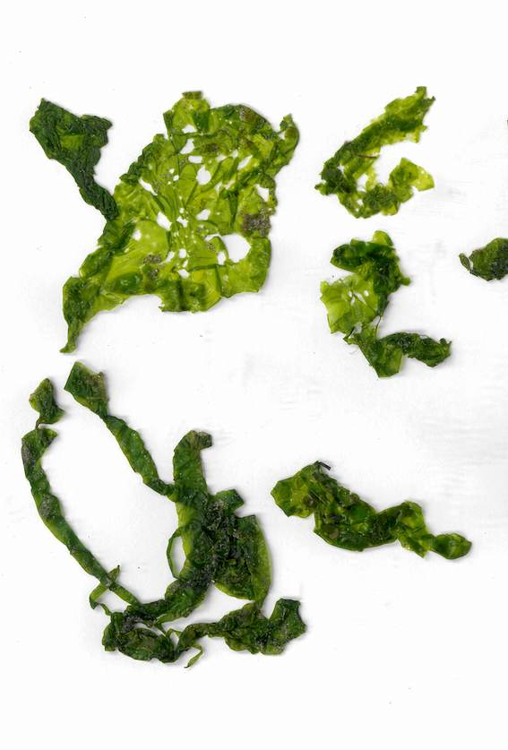
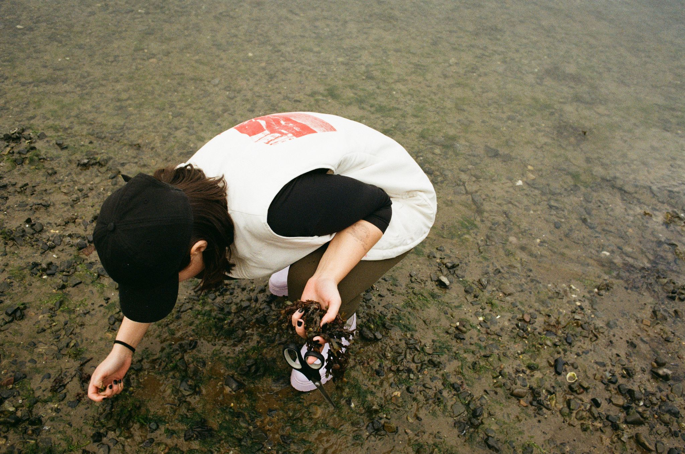
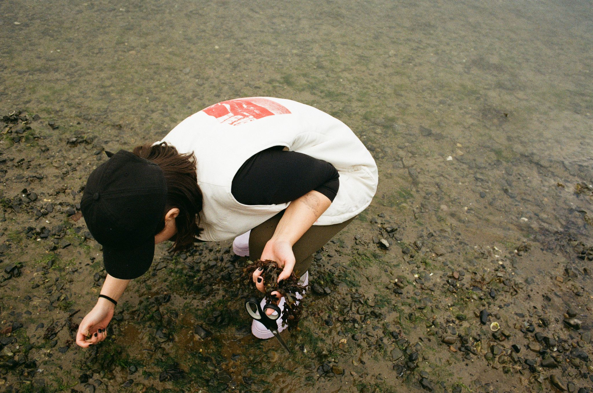

Bladderwrack is a dark brown bulbous seaweed that typically comes in large clusters attached to rocks, the sea bed or on piers. It grows in abundance on the middle-shore of rocky coastal areas and is the most common and versatile species of seaweed. Bladderwrack gets its name from the air bladders that occur along its fronds. These air bladders float the seaweed when it is immersed by the tide, exposing a greater surface area to sunlight for photosynthesis. Although it belongs to the ‘brown seaweed’ kelp family, Bladderwrack actually varies in colour from olive green to dark brown, and even black.
Bladderwrack is known for its impressive nutrient profile; it’s high in fibre, vitamins, minerals, health-promoting plant compounds (phytochemicals) and Iodine. This all makes for a fantastic natural antioxidant, and is known to help joint pains.

Sea Lettuce (Ulva lactuca) is a vibrant, flat, leafy green seaweed that is only 2 cell layers thick. The fronds (leaves) within the water can resemble lettuce leaves, hence the name Sea Lettuce. It tends to be a pale green when young, bright green when mature and darker green when old. It is found on sheltered to moderately exposed rocks and shores, and in pools and shallow waters near the low watermark.
Harvesting sea lettuce involves a sharp eye, as it’s less common than other species. Due to fragility of the plant it is commonly washed ashore, or floating in the water. Make sure to only harvest the plants that are attached and living. Also important to note If it looks tubular it is most likely gutweed, which can be used, but is much harder to clean.
Sea lettuce is very high in protein, and high in umami. While it’s fairly flavourless fresh, it takes on a new taste when dried with a rich, deep, cucumber-umami flavour.
On Site
The "Why"
‘Roots’ is a project developed to highlight the exciting uses of seaweed as a healthy alternative food-source to the other overused crops we frequently rely on.
Historically Irish people took full advantage of this abundant natural resource until the time of the famine, where its vital use to avoid starvation gave it the reputation of ‘famine food’ in Ireland. This reputation fed into the classist views around food practices and the use of seaweed fell out of popular use within food consumption. We feel it is important to go back to our roots, and proudly champion the use of native Irish seaweed as a food source
It is also vital to us that the collection of seaweed be as ecological as possible, and instead of turning to industrial farming, or a consumerist-led product approach we instead promote personal foraging as a way to reduce harmful, destructive farming practices which damage the seafloor, as well as provide a fun way to engage with your local natural landscape.
Seaweed is a healthy, versatile and nutrient rich plant. It is known for its many health benefits, but it also has a surprisingly rich flavour palette when treated correctly, making it an exciting and resourceful crop. It’s also important that it can be collected by hand, which de-emphasizes the industrial farming system we are a part of and promotes a traditional relationship to nature that goes against classist, colonial views of food. We invite you to have an open mind, and try seaweed as part of your diet in a way you may not have before, we’re sure it will surprise you.
- Hannah & Tom
 
